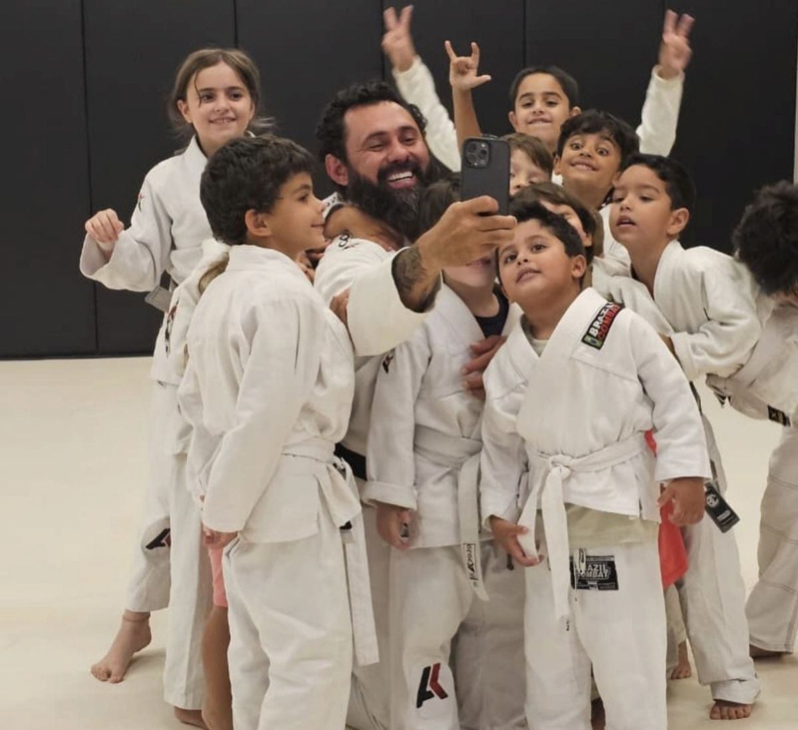
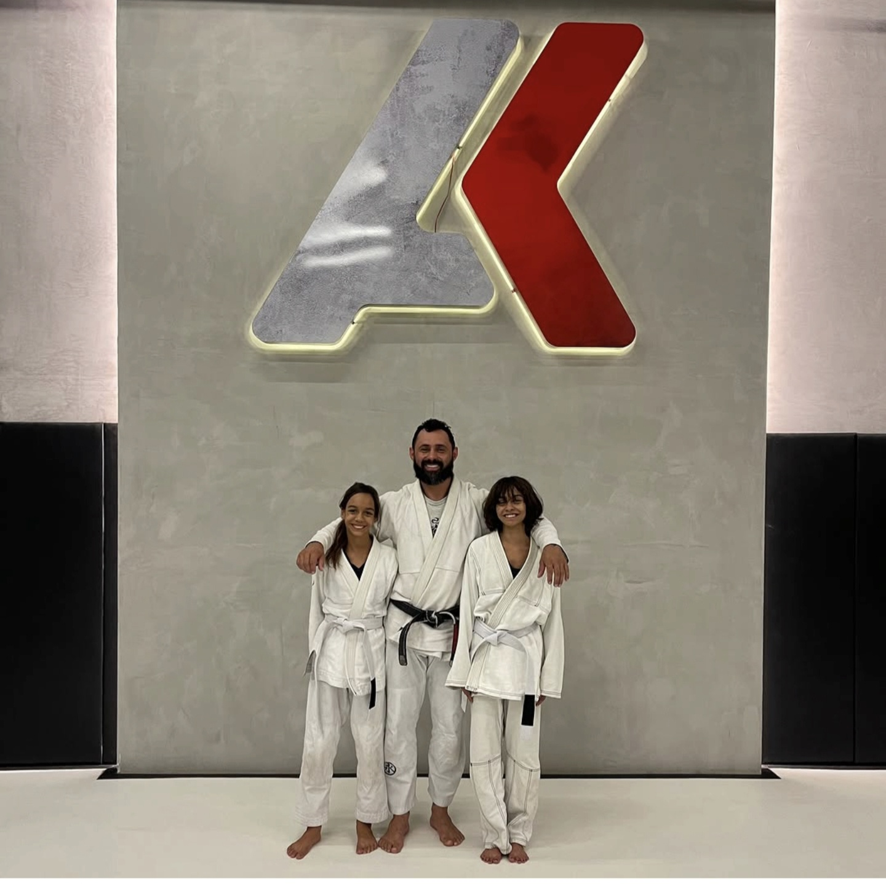
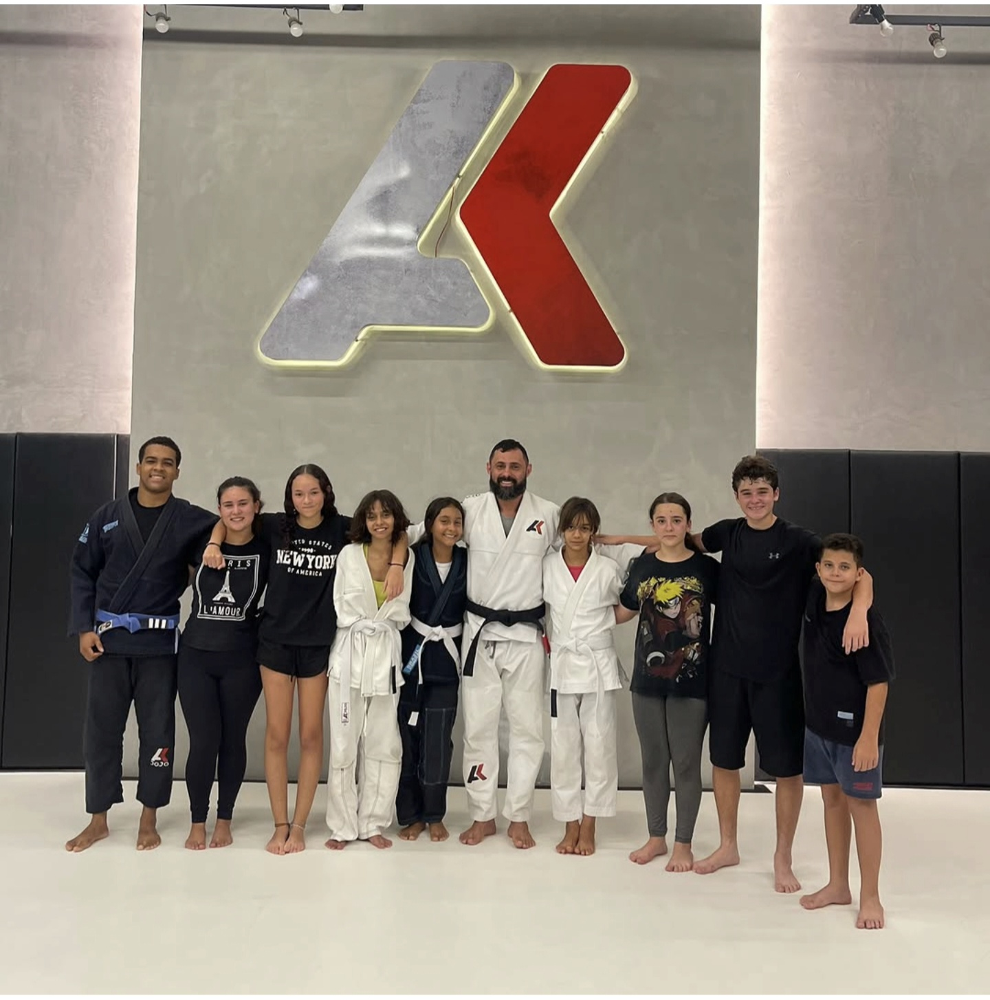
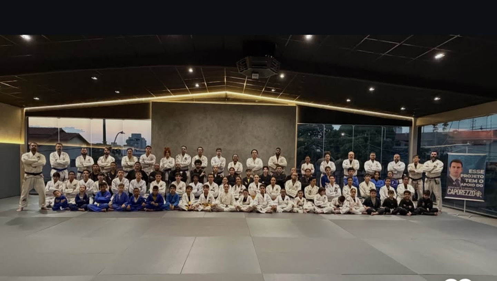
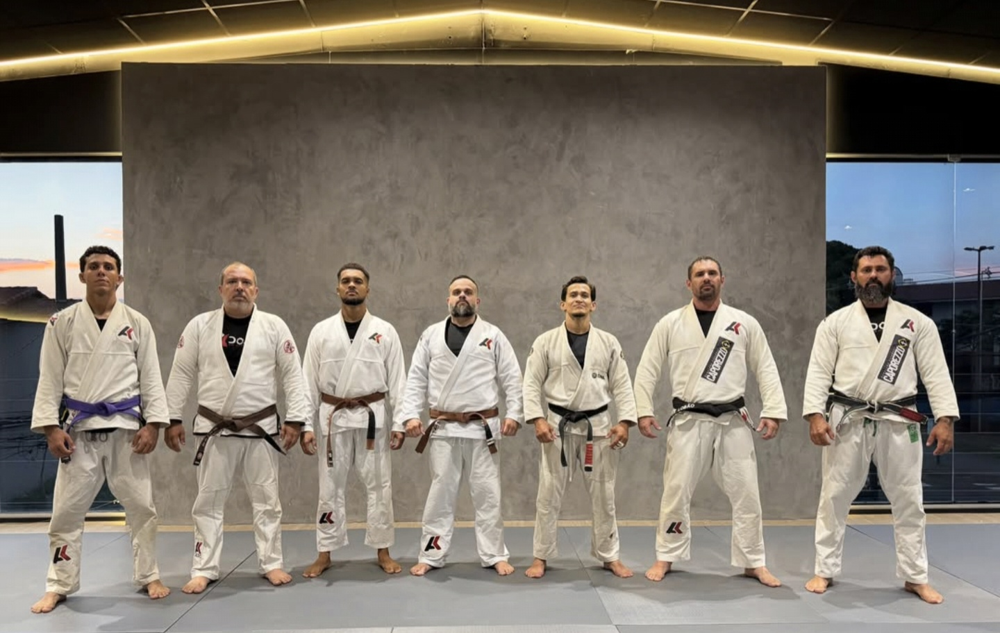
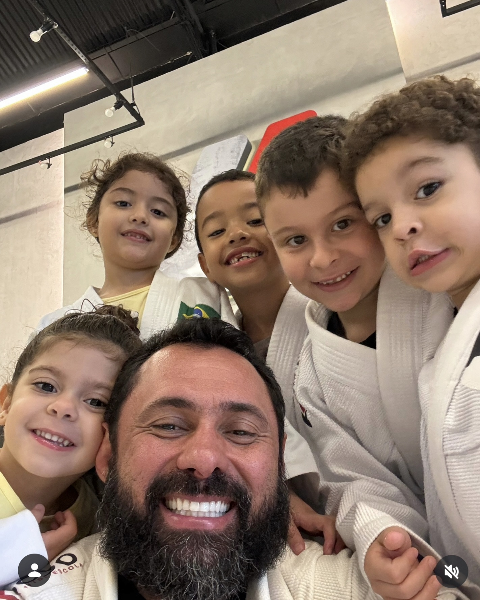

Para quem
Crianças e jovens de [FAIXA ETÁRIA], com prioridade para famílias em situação de vulnerabilidade.
OSC · UBERLÂNDIA-MG
Acreditamos que toda criança merece uma oportunidade de construir um futuro melhor.
No Instituto Khuririm, utilizamos o esporte, a educação e o desenvolvimento socioemocional como ferramentas para transformar realidades, fortalecer princípios e valores e abrir novos caminhos para crianças e adolescentes.
Mais do que ensinar uma modalidade esportiva, queremos formar pessoas preparadas para os desafios da vida.
O esporte é o começo. A transformação vai muito além do tatame.


NOSSA HISTÓRIA
Toda grande transformação começa com um propósito.
A história do Instituto Khuririm tem suas raízes em 1998, quando nasceu o desejo de utilizar o esporte como instrumento de transformação social.
O que começou como um sonho colocado por Deus no coração de seu fundador tornou-se uma missão: oferecer oportunidades a crianças e adolescentes, especialmente àqueles que enfrentam situações de vulnerabilidade social.
Ao longo dessa caminhada, aprendemos que ensinar vai muito além de uma técnica esportiva.
É acolher. É orientar. É ensinar o respeito. É desenvolver a disciplina. É ajudar uma criança a acreditar em si mesma.
Hoje, o Instituto Khuririm representa a continuidade desse propósito, ampliando sua atuação por meio do esporte, da educação, do desenvolvimento socioemocional e do acompanhamento especializado.
Nossa missão não é apenas formar atletas. É contribuir para a formação de seres humanos com princípios, valores e oportunidades de futuro.
“Essa marca carrega minha história e a confiança no que ainda vamos construir juntos.”
Anderson Khuririm · fundador, professor faixa-preta de Jiu-Jítsu
APRESENTAÇÃO DO FUNDADOR
Anderson Khuririm
Fundador do Instituto Khuririm
Professor faixa-preta de Jiu-Jítsu
Com uma trajetória dedicada ao esporte e à formação humana, Anderson Khuririm acredita que o verdadeiro valor de um projeto social está nas vidas que ele consegue alcançar.
Sua visão parte de um princípio: o esporte pode ser uma poderosa ferramenta de educação, acolhimento e transformação social.
O Instituto representa a continuidade dessa missão, reunindo pessoas, profissionais, voluntários e parceiros comprometidos com a construção de novas oportunidades.
AULAS GRATUITAS
Crianças e jovens de [FAIXA ETÁRIA], com prioridade para famílias em situação de vulnerabilidade.
[DIAS DA SEMANA]
[HORÁRIO DAS TURMAS]
[ENDEREÇO DO TREINO]
Uberlândia, MG
Fale com a gente pelo WhatsApp. É gratuito: o responsável faz a inscrição e a criança já pode começar.
QUEM SOMOS
Promover o desenvolvimento humano e a transformação social de crianças e adolescentes por meio do esporte, da educação e do fortalecimento das competências socioemocionais, proporcionando oportunidades de crescimento pessoal e construção de um futuro melhor.
Ser uma instituição de referência em desenvolvimento humano e formação esportiva, reconhecida pela capacidade de transformar realidades, fortalecer famílias e gerar impacto social positivo nas comunidades em que atua.
MAIS QUE TÉCNICA
Acreditamos em um propósito maior, fundamentado no amor a Deus e ao próximo.
Reconhecemos a dignidade e o valor de cada pessoa.
Ensinamos que compromisso e constância são fundamentais para o crescimento.
Agimos com honestidade, responsabilidade e transparência.
Acolhemos cada pessoa, respeitando suas necessidades e sua história.
Ensinamos que dificuldades podem ser superadas com dedicação e coragem.
Acreditamos no poder de servir e transformar a vida do próximo.
NOSSOS PROGRAMAS
O jiu-jítsu é uma das principais ferramentas de transformação utilizadas pelo Instituto.
Por meio do esporte, crianças e adolescentes desenvolvem disciplina, respeito, autocontrole, confiança, responsabilidade e capacidade de superar desafios.
Nosso trabalho não se limita à formação esportiva. Buscamos ensinar valores que acompanharão nossos alunos por toda a vida.
Acreditamos que o desenvolvimento emocional é tão importante quanto o físico e o intelectual.
Por isso, trabalhamos competências como autoconhecimento, empatia, respeito, convivência, comunicação, responsabilidade e inteligência emocional.
Nosso objetivo é contribuir para que crianças e adolescentes aprendam a reconhecer suas emoções, construir relacionamentos saudáveis e enfrentar os desafios cotidianos.
O acesso à educação amplia horizontes e cria possibilidades.
Por meio do ensino da língua inglesa, buscamos oferecer novas oportunidades de aprendizagem, desenvolvimento cultural e preparação para o futuro.
Aprender um novo idioma também significa conhecer novas culturas e ampliar as possibilidades de comunicação.
As atividades de língua espanhola contribuem para a formação educacional e cultural dos participantes.
Com o apoio de profissionais habilitados, buscamos oferecer acolhimento, orientação e acompanhamento psicológico, contribuindo para o bem-estar emocional e o desenvolvimento saudável dos participantes.
Entendemos que cuidar das emoções também faz parte da construção de um futuro melhor.
GALERIA




SEJA UM APOIADOR
Nenhuma grande transformação acontece sozinha.
Por trás de cada criança que encontra uma nova oportunidade, existem pessoas que acreditam, apoiam e decidem fazer a diferença.
Ao apoiar o Instituto Khuririm, você contribui para a continuidade e a ampliação de iniciativas voltadas ao esporte, à educação e ao desenvolvimento humano. Sua participação pode ajudar a construir oportunidades que transformarão vidas.
Contribua financeiramente para a manutenção e o desenvolvimento dos projetos.
Pagamento direto na conta do instituto. Prestação de contas: ver aqui.
Compartilhe seu conhecimento, sua experiência e seu tempo com quem precisa de oportunidades.
Quero ser voluntárioAssocie sua empresa a uma iniciativa de impacto social e contribua para a ampliação dos projetos.
Quero ser parceiraConheça as necessidades das atividades e descubra como colaborar diretamente.
Quero apoiar um projetoQUEM APOIA
TRANSPARÊNCIA E RESPONSABILIDADE
O Instituto Khuririm acredita que transformar vidas exige compromisso, responsabilidade e confiança.
Por isso, valorizamos a transparência em nossas atividades, projetos, parcerias e na utilização dos recursos recebidos.
CONTATO
Inscrições, doações, voluntariado ou parcerias: fale direto com o instituto.
Falar no WhatsApp[MAPA DO LOCAL DE TREINO · Google Maps]